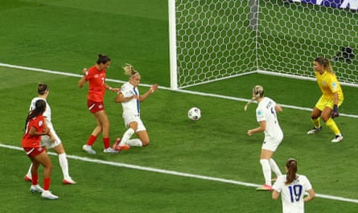

Switzerland ensured that local interest in Euro 2025 persists by the skin of its teeth. They were on the brink of heartbreak when Natalia Kuikka scored a late penalty to put Finland on the verge of leapfrogging them into the last eight. It looked as if they had made a mess of a manageable situation but the stands erupted when, two minutes into added time, the substitute Riola Xhemaili finished from close range. Spain await the hosts, who may now believe anything is possible.
At kick-off, Geneva pulsated under the early evening sun. This felt the loudest, most partisan atmosphere of the summer so far; the city had been abuzz all afternoon, the red tide that marched towards the stadium painting a momentous picture, and the sense was of a home country finally ready to embrace the tournament’s glorious turbulence unflinchingly.
Switzerland’s players posed for a team photograph on the pitch upon their arrival, just under two hours before the start. This was an occasion to be savoured and they quickly sought to squeeze everything from it. The noise was deafening when Svenja Fölmli, seizing on a loose ball, briefly sensed a run on goal. Their early pressure did not let up and brought a clear chance in the 11th minute when Viola Calligaris, all alone in front of goal after a free-kick had not been cleared, shaped for an extravagant bicycle kick but completely miscued.
It was an ambitious contortion for a centre-back to attempt. Next came a more familiar incursion from Sydney Schertenleib, the gifted young Barcelona forward, and a 20-yard curler that Anna Koivunen beat away. Fölmli backheeled wide moments later and Switzerland, earning hefty marks for inventiveness, were bashing at the door.
Naturally they were almost punished for that profligacy, a late-arriving Oona Sevenius seeing her header saved near the line by Livia Peng after consecutive Finland corners. There was an urgency to Finland when they did commit players forward. Switzerland’s failings at both ends in their opening defeat to Norway would not have gone unnoticed and at least, by the half hour, Marko Saloranta’s side had a foothold from which to test home nerves.
Riola Xhemaili turns home Switzerland’s equaliser in the second minute of stoppage time.Photograph: Bernadett Szabó/Reuters
Perhaps Switzerland were unsure whether to stick or twist. Their momentum had dulled, although Smilla Vallotto was given a now rare opening and placed wide from 15 yards. As half-time approached proceedings had become scrappy; an increasingly pensive crowd was almost aghast when Peng held on brilliantly to prevent Eva Nyström unwittingly putting Finland in front after deflecting a free-kick.
Presumably distressed by the loss of tempo, Sundhage made two changes at the interval. Oona Siren, the clever West Ham midfielder, had begun to dictate for Finland. But the question was whether, with the onus on them, her team could find the goal they required. The Finns were increasingly allowed possession, their opponents’ plan presumably being to counterattack them into oblivion.
A right-sided burst by Iman Beney, who joined Manchester City last month, fleetingly threatened such consequences. But a genuine shooting chance did not arrive until the 63rd minute, when Vallotto drilled straight at Koivunen. Then Leila Wandeler, one of the replacements, ballooned over; at the other end, anxiety was palpable whenever Finland even hinted at ruining the party.
Switzerland now looked more likely to turn the screw. Another Wandeler break brought a cross just too high for an unmarked Vallotto. This time they faced bitter consequences, Sanni Franssi struggling to extricate herself from a tussle on the byline before Emma Koivisto took over. She was hacked down by Calligaris, the penalty award impossible to dispute. Kuikka kept her cool after waiting for an eternity; desolation seemed to await the Swiss until Xhemaili swept home.